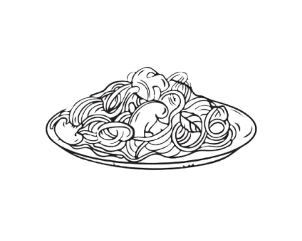

A chegada dos imigrantes italianos
O ponto de partida que explica a introdução da culinária italiana no Brasil, especialmente nas regiões com forte presença italiana. A formação de bairros italianos e o surgimento de restaurantes e cantinas foram cruciais para tornar a culinária italiana acessível e apreciada por todos.

Adaptação dos pratos italianos
A maneira como os pratos foram moldados pelos ingredientes locais reflete a fusão cultural, contribuindo para a identidade gastronômica brasileir. A pizza é um exemplo de prato que evoluiu para se tornar um dos mais consumidos no país.

Festas e eventos tradicionais
Como as festas típicas e a preservação de tradições culinárias ajudam a manter a herança cultural viva, mas têm impacto mais localizado. O churrasco gaúcho é um exemplo interessante de integração cultural, mas com alcance mais regional.